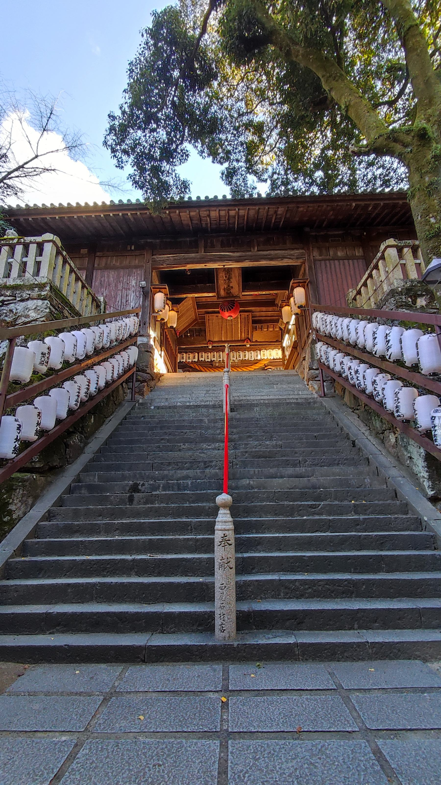
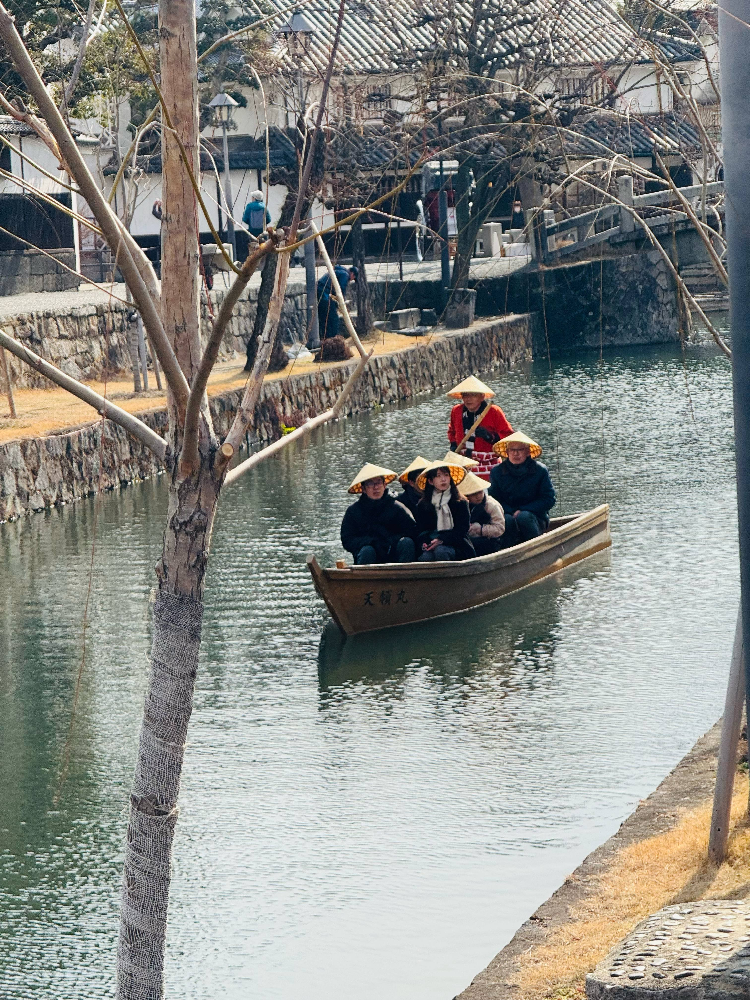
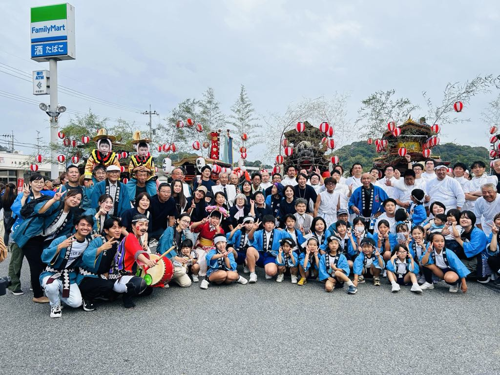
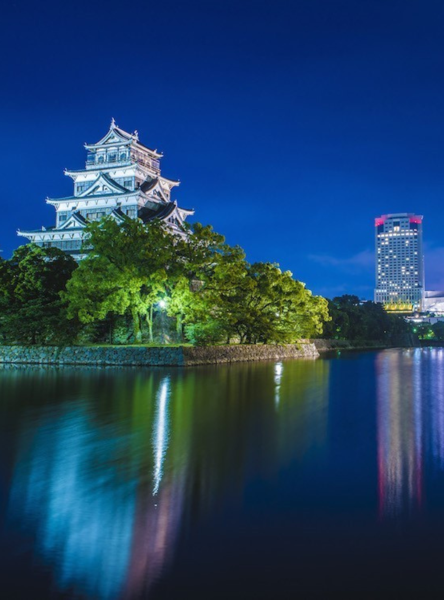
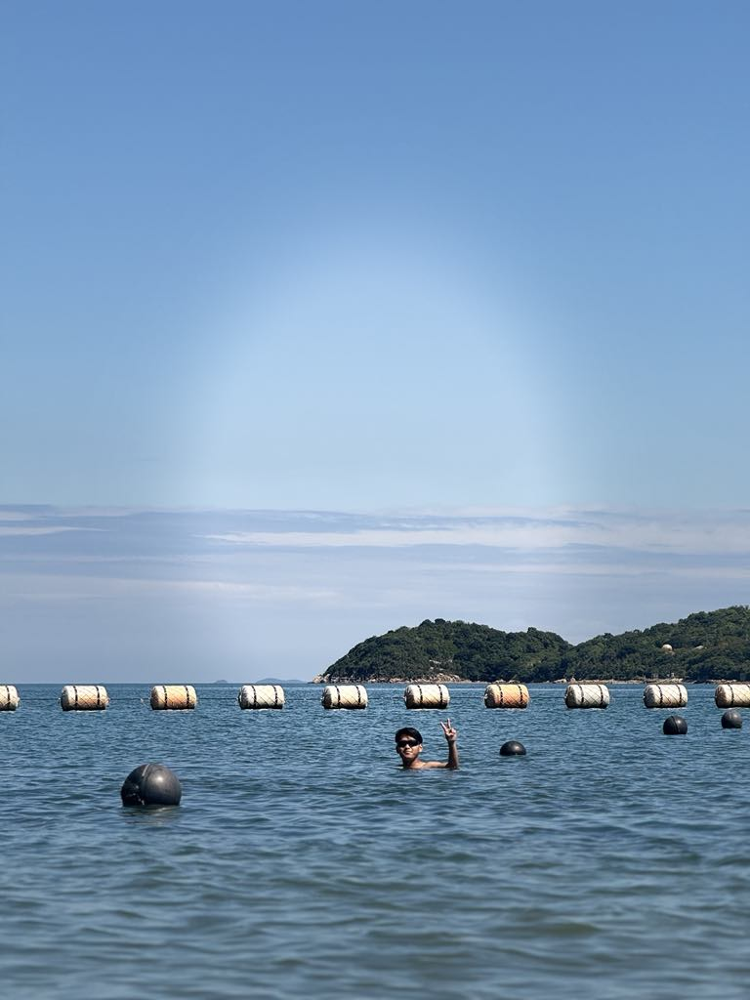
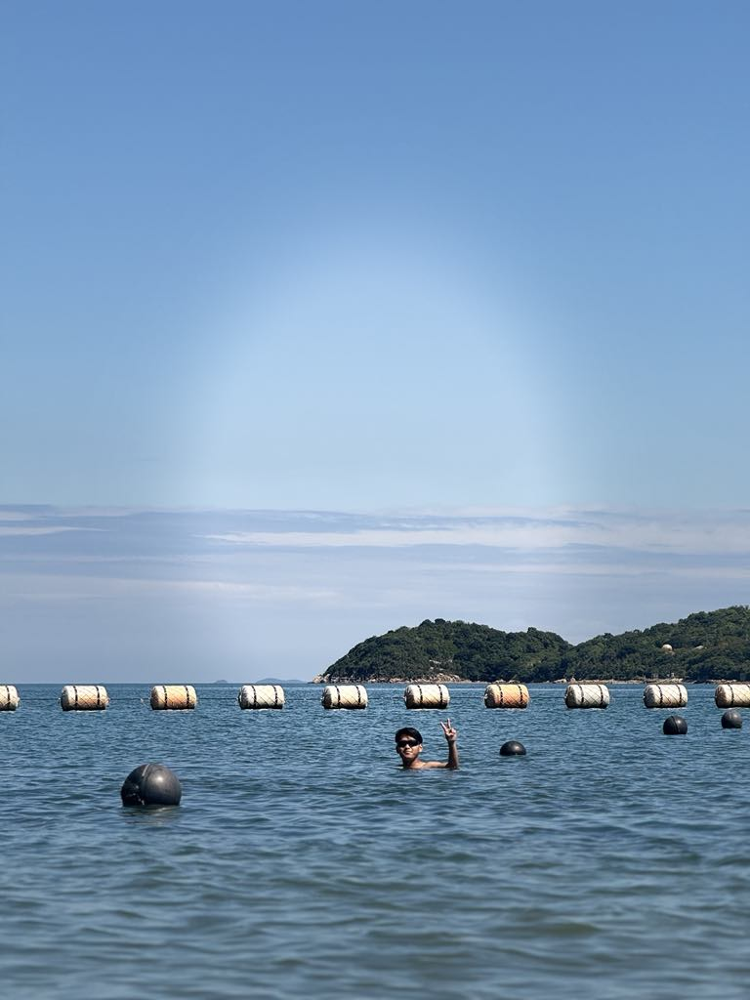
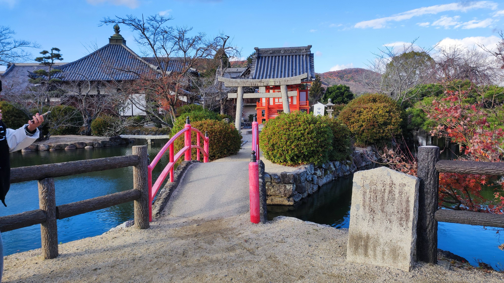
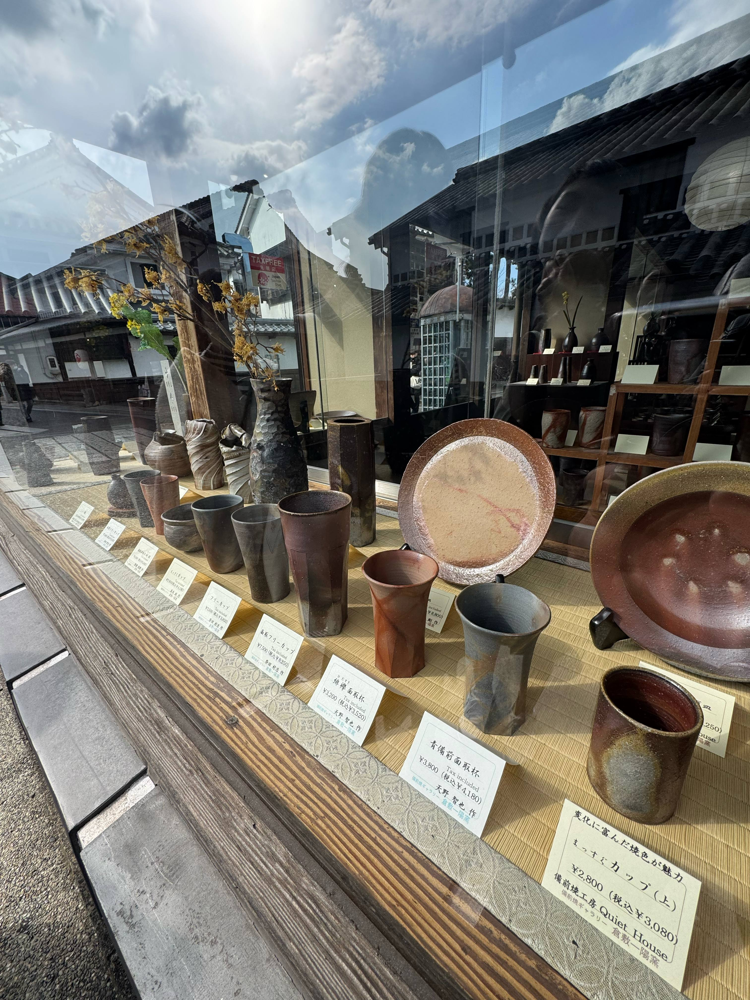

Shōdoshima
Olive & Citrus Farm Stays
Harvest with locals and learn water‑wise farming on the “island of olives”.
Promote the Eco-Tourism of Seas and green forest
Find eco-friendly accommodations and experiences that respect nature and local communities
The festival of the setouchi and it is celebrate rarely and all the people in the community will share there though and
celebrate the worship the god.

Learn More
This is the one of the best place to vist. The place is very clean and bounded by the sea and green forest.
It also has the olive oil forest and plant.
A beautiful sea where you can see the view and enjoy the feelings.
We can go there with family and friends to enjoy the swimming in the summer.

Learn More
Historical place and good place to visti for the foreigner. It express the history of the setouchi okayama
This is the hand made art which is made by the local people and it is very famous in the setouchi.
Visit the Setouchi Triennale for contemporary art exhibitions.
Explore the okayama castel which is very famous and Visitors can enjoy the castle's unique architecture.
Centered on the Seto Inland Sea (Setonaikai) between Honshu and Shikoku.
Low‑impact adventures that support conservation and communities.
Harvest with locals and learn water‑wise farming on the “island of olives”.
Choose electric or solar boat between art islands and fishing towns.
Car‑free routes, local guides, and plastic‑free picnics with island produce.
Join volunteer days restoring habitats and cleaning remote beaches.
Top Attractions

Setouchi festival

Okayama Castel
 Learn More

Learn More

Ushimado
Culture & Food

Local culture

Art Festivals
Historic Temples
Explore Setouchi on the Map
Interactive Map
Open in Google Maps
Travel Tips
Eco‑Tourism Ideas
Shōdoshima
Olive & Citrus Farm Stays
 Island Hopping
Island Hopping
Low‑Emission Boat Tours
Shimanami Kaido
Guided Cycling
Conservation
Reef & Shoreline Care
Contact Us